深入帮助📕
回忆上节课内容
- 上次制作了
oeasy.txt - 用
vim oeasy.txt打开了文件 :f[ile]查询了当前文件 🔖 的信息- 从
正常模式或命令模式(Normal mode)切换到命令行模式 (Command-Line mode)要使用 : - 从
命令行模式（Command-Line mode）按 回车 执行命令，执行完了就回来了
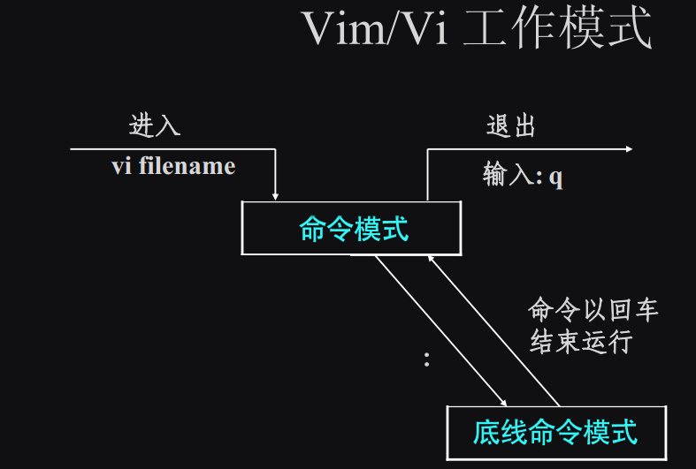
- 我们已经可以在两个模式（
命令模式、底线命令模式模式）之间切换 - 我们这次想要了解更多的帮助信息
运行帮助📕
在 vim 中运行 :help
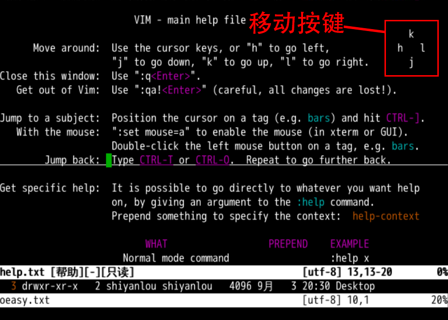
- 我们可以使用 h、j、k、l 进行移动
- 方向如上图所示
- 这个时候
hjkl不是输入字符而是移动方向的命令 - 不光是这四个字符
- 所有的键盘字符都对应命令
- 这就是为什么默认的正常模式
(Normal mode)也被称作命令模式
命令模式
- 命令模式可以直接按键来执行命令
- 比如移动
- 还有很多各种命令

- 命令模式
(Normal mode)和 命令行模式(Command-Line mode)不同 - 命令模式
(Normal mode)直接按键执行 - 而命令行模式
(Command-Line mode)在底部行输入命令后按 回车 执行💡 - 模式不同，对应的操作不同
- 这也是
vim上手最难的原因
学习曲线
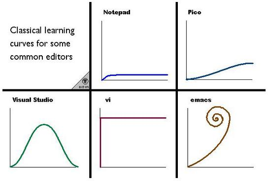
- vim 是公认的非常陡峭的学习曲线
- 不过突破上去了之后，效率是相当高的
- 多易必多难
- 最开始看起来容易的东西，比如 ide
- 什么都给你配好了，但是你对于底层完全失去了理解和控制，到最后反而是最难
- 我们一点点翻越这陡峭的山，征服 vim
但是为什么是 h、j、k、l 对应方向呢？
起源
vim起源于vivi早期是 Bill Joy 在adm3A上制作和使用的adm3A是一台终端adm3A的键盘没有方向键- 所以这个习惯就延续的到了今天⚠️
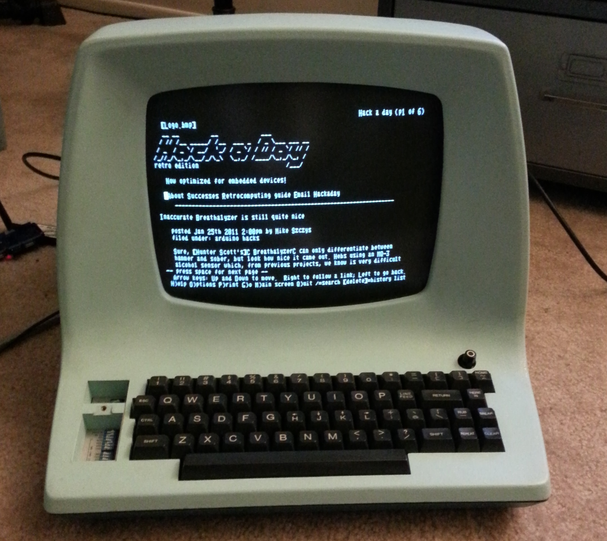
- 我们可以看到上图键盘上的 h、j、k、l 按键上面对应的方向
现在还需要用 h、j、k、l 按键控制光标么？
键盘核心区
是的！🤓 现在还可以使用 h、j、k、l 按键控制光标。
- 在使用 vim 时，咱们可以把手放在键盘核心区有助于提高效率
- 将左手食指放在 f 上
- 将右手食指放在 j 上

在上面图片中展示的现代 101 键盘中有加入了方向键：
- 在右手的右下面的非核心区
- 笔记本键盘方向键也需要物理移动手的位置
- 所以这种移动会降低效率，那我们能用鼠标定位么？
使用鼠标🐭
想在 vim 中使用鼠标控制，我们先需要进行基本的配置：
- 首先我们在 vim 中搜索帮助，输入
:h mouse，可以看到如下图所示的界面：
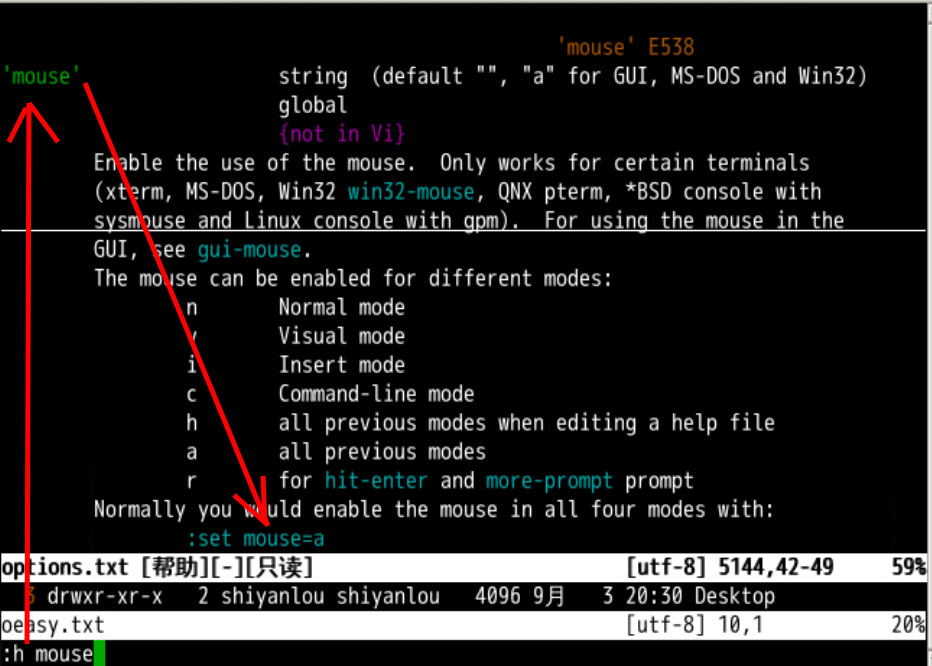
- 现在我们进行主题设置
- 从上图中我们可以看到，vim 提示我们执行
:set mouse=a，就可以用鼠标了！！！ - 我们可以使用鼠标移动光标
- 使用滚轮可以翻页
- 还可以使用鼠标点击相关的主题链接
这些现代科技真的很不错，使用鼠标后操作更便捷了，但是鼠标其实会更影响效率，因为鼠标会让我们的手离开键盘。
然而 vi 就是想让用户可以实现，手不离开键盘核心区域就完成所有的编辑工作：
- 方向移动是最常用的操作
- 他想让你相对灵活的右手位置在键盘核心区完全不动
- 只需要按下手指就完成相应的移动操作
- 而且比鼠标还快速
位置记忆
- 用 l 来表示右边很难记忆
- 怎么办呢？有用户想到了这个
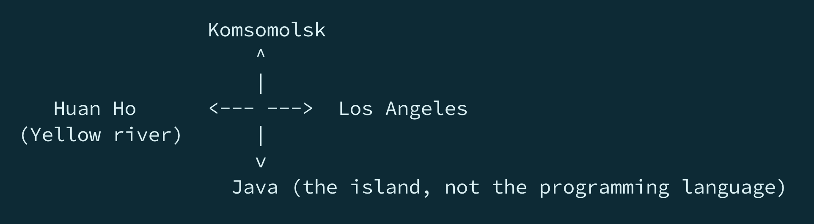
- 东 洛杉矶
- 南 爪哇岛
- 西 黄河
- 北 共青城
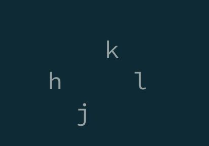
- 用熟了其实很简洁
- 逐渐将操作变成肌肉记忆，不要走脑子
现在我们有一个新问题，当年在没有鼠标的时候，Bill Joy 是如何跳转超链接主题的呢？
键盘跳转
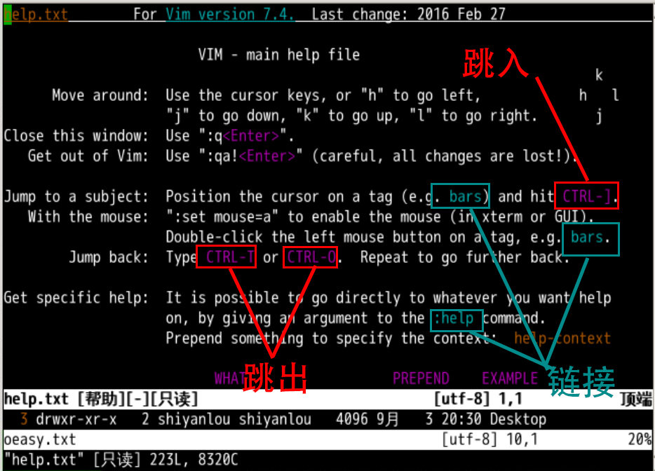
- 运行
:help回到主题开头 - 我们可以看到
bars这样的链接 - 使用 h、j、k、l 移动光标
- 把光标移动到链接上
- 是 ctrl+] 就可以跳入链接
- ctrl+o 可以跳出链接，回到原位置
older position - 我们可以试试反复跳跃🤸♀️
两套手册
- 在翻阅 vim 的 manual 的时候
- 我们发现 vim 有两套 manual
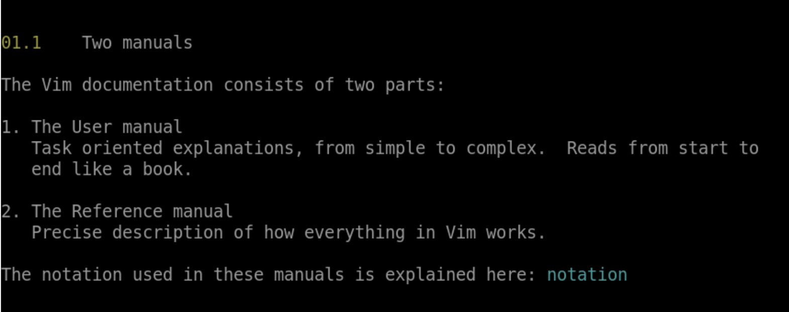
用户手册
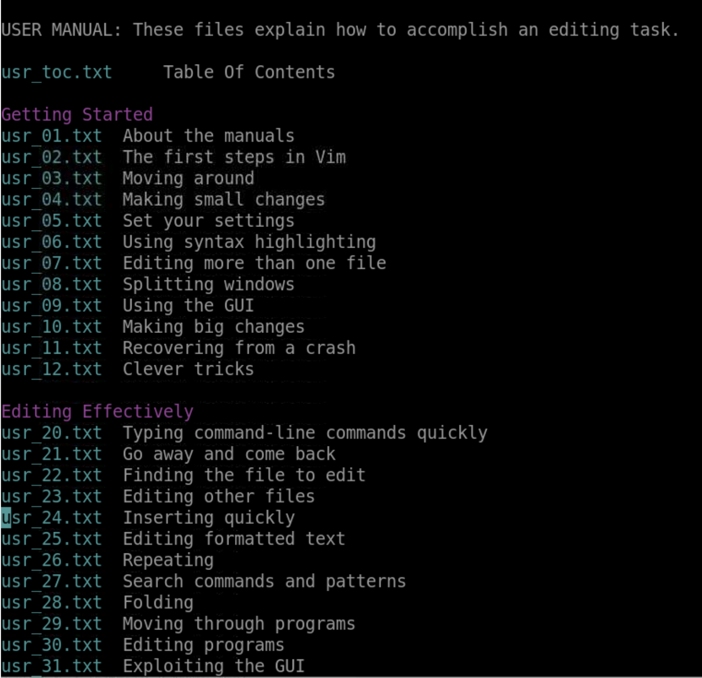
- 一套是用户手册
- 像一本书一样
- 从头读到尾
- 从简单到复杂
- 适合初学
引用手册
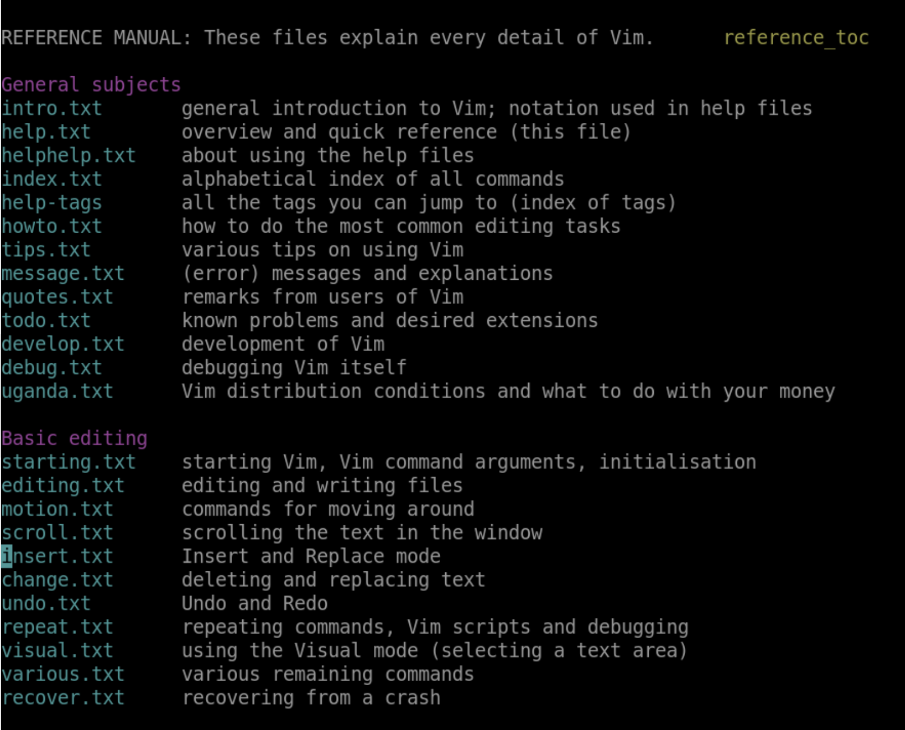
- 另一套是引用手册
- 精确的描述每个主题
- 以及主题内容是如何工作的
- 适合查询
总结
- 我们这次看了
- 正常模式
- 命令行模式
- 以及他们切换的方式
- 了解了帮助文件的正确打开方式
- h、j、k、l 命令的历史来源
- 在文档中使用鼠标(并不建议)
- 使用全键盘方式跳入跳出超链接
- 帮助文件的两种手册
- 不过说到这里我们还是没改文档啊啊啊啊！😓
- 好饭不怕晚？🤪
- 我们下次再说！👋